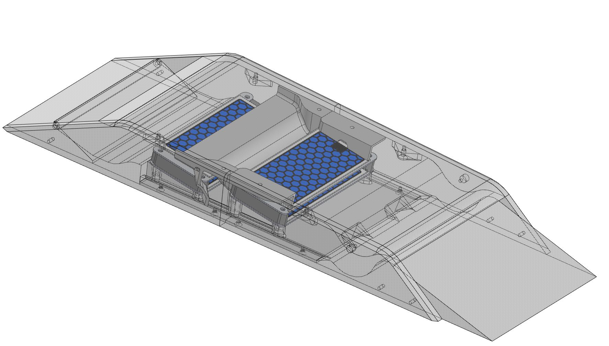
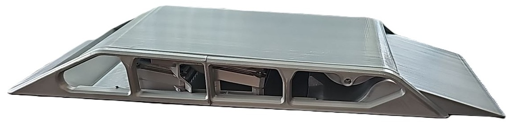

Validating ozone generation at -60°C and FL400 altitudes.
Role: CTO & Lead Engineer
Tools: Arduino, SolidWorks Flow Simulation, Ozone Sensors
Developing an ozone restoration payload for aircraft required the system to operate at 10–13 km altitude (Crusing Altitude), where temperatures drop to -60°C and air density is minimal.

Fig 1. Mechanical System Layout
Fig 2. Manufactured PrototypeValidated the aerodynamic design and sensor fusion logic. Established the baseline architecture for the "In-Flight Ozone Restoration" concept (Provisional Patent work).